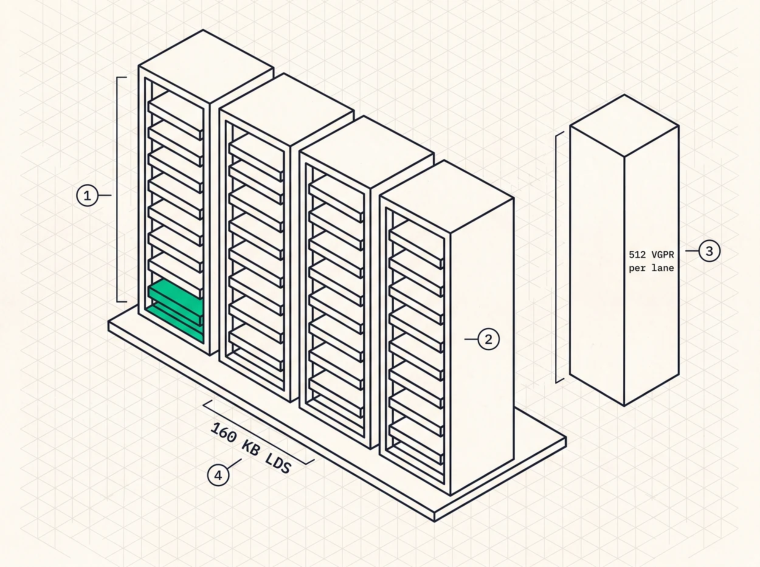
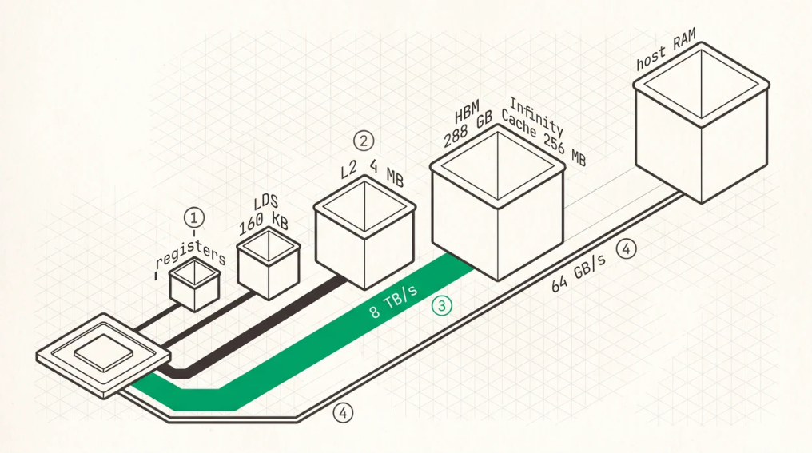

GPU Architecture for Inference
Before you write a line of kernel code you need to understand the machine, and the trouble with GPU architecture is that most of what people carry around in their heads is either a generation out of date or borrowed from the other vendor. Wavefront counts, cache sizes, and register file capacities all shifted in CDNA4, and occupancy arithmetic done with the old numbers produces kernels that are mysteriously slow for reasons no profiler will name.
So this chapter is mostly numbers, and they’re the current ones.
The GPU as a throughput processor
Work executes in groups called wavefronts on AMD and warps on NVIDIA, 64 lanes wide on CDNA and 32 on NVIDIA. Those get scheduled onto compute units or streaming multiprocessors , each holding many of them simultaneously so that memory latency on one can be covered by execution of another.
On CDNA4 (MI355X) the chip carries 8 accelerator complex dies of 32 compute units each, 256 CUs in total. Every CU contains 4 SIMD units, every SIMD holds up to 8 wavefronts , and so a CU holds up to 32 , which works out at 2,048 resident work-items per CU. Each SIMD has a vector register file of 512 registers per lane, allocated in blocks of 8, with regular and accumulator registers drawing on that single unified budget. Occupancy therefore falls straight out of a division. A kernel using 128 VGPRs per lane gets 512/128, so 4 waves per SIMD and half occupancy, one using 256 gets 2, and one using 64 gets the architectural maximum of 8.
On NVIDIA Hopper (H100) you have 132 SMs on the SXM5 part, each holding up to 64 warps , which is also 2,048 threads, backed by a 64K × 32-bit register file per SM (256 KB) and up to 32 resident thread blocks. Blackwell keeps the 64-warp limit.

O
1One compute unit holds four SIMD units, not one. This is where the arithmetic starts.O
2Each SIMD holds up to eight wavefronts, so a CU holds 32, which is 2,048 resident work-items. The often-quoted figure of eight per CU is the per-SIMD number wearing the wrong label.O
3Occupancy falls out of a division. The register file is 512 registers per lane per SIMD, so a kernel using 128 gets four waves, one using 256 gets two, and one using 64 gets the architectural maximum.O
4The LDS is per compute unit and shared by all four SIMDs, so it limits workgroups where the register file limits waves.
Three consequences follow, and the second one is the expensive one.
High occupancy isn’t automatically the goal. A kernel with low occupancy but plenty of instruction-level parallelism can saturate the machine with fewer waves, and register-hungry matrix-core kernels routinely run at 2 to 4 waves per SIMD by design. What you actually need is enough memory-level parallelism to keep the memory system busy, meaning enough independent loads in flight to cover HBM latency. Occupancy is one way to get that, deep per-wave prefetch pipelines are another, and for decode attention the second usually beats the first.
The wavefront is a synchronisation unit, not just a width, and this is the one that costs people weeks. A cross-lane reduction is a wavefront-wide barrier, so a load issued immediately before one can’t overlap with anything. In-flight loads cap at one, and a bandwidth-bound kernel quietly becomes a latency-bound kernel. That single structural mistake is the difference between 200 GB/s and 4,800 GB/s in the measurements of Chapter 10.
And wave64 against warp32 changes tile shapes. A 64-lane wavefront naturally covers a 64-element row where a 32-lane warp doesn’t, so attention and GEMM tiles tuned for one width are rarely optimal on the other.
Memory hierarchy
Registers are the fastest storage, private to a wavefront. CDNA4 gives 512 VGPRs per lane per SIMD, roughly 128 KB per SIMD and 512 KB per CU, and Hopper gives 256 KB per SM. Register pressure is the primary occupancy limiter for compute kernels.
LDS and shared memory are the software-managed scratchpad, and CDNA4 raised the LDS from CDNA3’s 64 KB per CU to 160 KB per CU , a change aimed squarely at attention and GEMM tiles that invalidates a lot of older AMD tuning advice. Hopper offers up to 228 KB of shared memory per SM out of a combined 256 KB L1 and shared pool. Attention kernels use it for tiled K and V blocks, partial softmax state, and cross-wave reductions.
L2 and last-level cache is where terminology causes real errors, so be careful here. On MI355X each XCD has its own 4 MB L2 , 32 MB across the chip, and behind those sits a chip-wide 256 MB AMD Infinity Cache , a memory-attached last-level cache. Describing MI355X as having “256 MB of L2” is common and wrong, and it matters because Infinity Cache behaves differently, sitting further away, shared across XCDs, and backing HBM rather than the CUs directly. On H100 the L2 is 50 MB, H200 uses the same compute die so it’s also 50 MB, and B200 has 126 MB. Both Blackwell’s larger L2 and AMD’s Infinity Cache matter enormously for medium-context decode, where a KV working set that fits in last-level cache runs at cache bandwidth instead of HBM bandwidth.
HBM holds the weights and the KV cache. MI355X has 288 GB of HBM3E at 8 TB/s peak, H100 has 80 GB of HBM3 at 3.35 TB/s, H200 has 141 GB at 4.8 TB/s, B200 has 192 GB at 8 TB/s, and B300 has 288 GB at 8 TB/s.

O
1Registers and LDS sit on the die. CDNA4 raised the LDS to 160 KB per compute unit, which is why attention tile sizes from the previous generation are worth re-deriving.O
2Each accelerator die has its own 4 MB L2. The 256 MB Infinity Cache sits behind all eight of them, which is why calling it 01cL201d misleads.O
3HBM is the wide pipe every memory-bound kernel is graded against. Peak is 8 TB/s and a streaming kernel measures about 5,800.O
4Host memory over PCIe is the thread. A buffer placed here by accident does not crash anything, it just quietly costs you 125 times.
The bandwidth ceiling
The spec sheet says 8 TB/s. The number you can build against is lower, and you find it by writing the simplest possible streaming kernel and measuring it.
On MI355X, mainarch’s mem_stream microbenchmark, a pure float4 grid-stride VRAM read, sustains about 5,800 GB/s, or 72% of the 8 TB/s peak . That’s the number every memory-bound kernel on that machine gets graded against. On H100 a well-written stream benchmark typically lands between 2.6 and 2.8 TB/s against a 3.35 TB/s peak.
The gap comes from memory controller overheads, refresh, cache-line granularity, and the plain fact that real access patterns are never as clean as the benchmark. The sustained figure is your design target and the peak figure is for press releases.
Grade every memory-bound kernel against sustained, and when it falls short, demand a specific cause rather than an adjective. When mainarch’s FlashDecoding kernel sustained 3,419 GB/s at 1M context, 42.7% of peak and 59% of the sustained ceiling, the useful question wasn’t “why only 59%” but “which mechanism is eating the other 41%”, and the answers turned out to be concrete. Combine serialisation, insufficient prefetch depth, and, before anyone found it, a scratch buffer sitting in host memory.
That last one deserves a paragraph of its own, because it’s the most instructive bug in this book. Three independent rewrites of the same kernel all plateaued at exactly the same 229 GB/s, and a fixed floor that doesn’t move when you change the kernel is never a kernel problem. The cause was a small partials buffer allocated in host memory instead of device memory, so every combine-phase read crossed PCIe, and moving that one buffer to VRAM was worth 3.8× on its own. On the raw driver interface you own where every byte lives, and that ownership is a responsibility. Chapter 6 has the full story.
Matrix cores
Modern GPUs carry dedicated matrix multiply hardware. AMD MFMA on CDNA4 operates on tiles such as 16×16×32 and 32×32×16 for 16-bit inputs, with deeper K for narrower types, and supports FP16, BF16, FP8 (E4M3 and E5M2), FP6, and FP4 (E2M1) with block scale factors applied in the datapath through the V_MFMA_*_SCALE_* family. NVIDIA Tensor Cores on Hopper expose wgmma , operating warpgroup-wide on larger tiles asynchronously, and Blackwell adds fifth-generation tcgen05 cores with NVFP4 support and tensor memory.
Peak dense throughput on MI355X is 2.5 PFLOPS for FP16 and BF16, 5.0 PFLOPS for FP8, and 10.1 PFLOPS for FP6 and FP4. Structured 2:4 sparsity doubles the FP16, BF16, FP8 and INT8 rates through the sparse MFMA instructions, and there is no sparse path for FP6 or FP4, so for those two 10.1 PFLOPS is the ceiling. H100 gives 989.4 TFLOPS dense FP16 and 1,979 TFLOPS FP8.
For prefill, where many tokens arrive at once, the GEMM dominates and the operation is computebound. For decode at small batch the same hardware runs a GEMV, fed by streaming weights from HBM, and the bottleneck is bandwidth rather than FLOPs. A decode GEMV using 5% of the matrix core’s peak isn’t a broken kernel, it’s a correctly memory-bound one, and understanding that saves a lot of wasted optimisation effort.
Low-precision support is the hardware foundation for the quantisation chapters, and on both vendors the matrix core can apply a scale factor in the datapath so dequantisation fuses into the multiply instead of being a separate pass. Note what that doesn’t buy you for decode, though. At batch 1 the matrix core is mostly idle regardless, so the useful dequantisation path is often a vector-ALU convert rather than scaled MFMA, because the M=1 shape wastes the matrix core’s other dimension.
One more thing about low precision. The hardware doesn’t always behave the way the documentation says. Which scale formats are honoured, how rounding works, where saturation kicks in, all of that can only be established by feeding known values through the silicon and reading back what came out. That calibration step isn’t optional when you’re targeting a new low-precision path.
How architecture shapes kernels
| FEATURE | AMD CDNA4 (MI355X) | NVIDIA HOPPER (H100) |
|---|---|---|
| Compute units | 256 CUs (8 XCDs × 32) | 132 SMs |
| Wavefront / warp width | 64 | 32 |
| Max waves per CU/SM | 32 (8 per SIMD × 4) | 64 warps |
| Register file | 512 VGPR/lane/SIMD (~512 KB/CU) | 256 KB/SM |
| LDS / shared memory | 160 KB/CU | up to 228 KB/SM |
| L2 | 4 MB per XCD (32 MB total) | 50 MB |
| Last-level cache | 256 MB Infinity Cache | (L2 is the LLC) |
| HBM | 288 GB HBM3E, 8 TB/s peak | 80 GB HBM3, 3.35 TB/s peak |
| Matrix core | MFMA | Tensor Core (wgmma) |
| Low precision | FP16/BF16/FP8/FP6/FP4 | FP16/BF16/FP8/INT8 |
The wider wavefront on AMD means each instruction covers more data while giving you fewer independent scheduling units per CU. The much larger last-level cache means more of a medium-length KV cache gets served without touching HBM. The larger shared memory per scheduling unit on NVIDIA changes tile-size choices. An attention kernel tuned for one won’t be optimal on the other, and pretending otherwise is how ports end up at 40% of achievable performance.
The roofline in practice
Measure the sustained bandwidth and achievable matrix throughput of your hardware rather than quoting spec numbers. Compute the arithmetic intensity of your kernel from bytes actually moved from HBM , not logical bytes and not bytes served from cache. Place the kernel on the roofline. Below the ridge you’re memory-bound and the ceiling is bandwidth × intensity, above it the ceiling is peak FLOPs. Then optimise whichever resource binds, moving fewer bytes or moving them better if you’re memorybound, reducing FLOPs or improving utilisation if you’re not.
For decode attention on a GQA model in FP16, with an intensity around 16, the ceiling works out at 5,800 GB/s × 16 FLOP/byte, roughly 93 TFLOPS, which is about 3.7% of the chip’s FP16 peak. That number isn’t a failure. It’s what memory-bound means, and it’s why the entire optimisation effort in Part III goes into bytes rather than FLOPs.
Key Concept
Grade every performance number against measured sustained bandwidth, never the spec-sheet peak. Know your architecture’s real numbers, which on CDNA4 means 32 waves per CU, 160 KB of LDS, and 4 MB of L2 per XCD behind a 256 MB Infinity Cache, and on Hopper 64 warps per SM with 50 MB of L2. Occupancy matters only insofar as it delivers memory-level parallelism, and a wavefront-wide reduction placed just after a load destroys that parallelism no matter how high occupancy climbs.
Exercises
A CDNA4 kernel uses 168 VGPRs per lane and 40 KB of LDS per workgroup of 256 work-items. How many wavefronts per SIMD, and how many workgroups per CU, can be resident? Which resource binds?
Repeat for an H100 kernel using 96 registers per thread and 64 KB of shared memory per 256-thread block.
A decode kernel reads 512 MB of KV and completes in 157 µs. What bandwidth is that, and what fraction of a 5,800 GB/s sustained ceiling? What’s the minimum possible time at that ceiling?
Build: write the streaming-read microbenchmark for your GPU, sweep access width (32, 64, 128-bit) and unroll depth, and plot achieved bandwidth. Find the configuration that first reaches 90% of your best result.